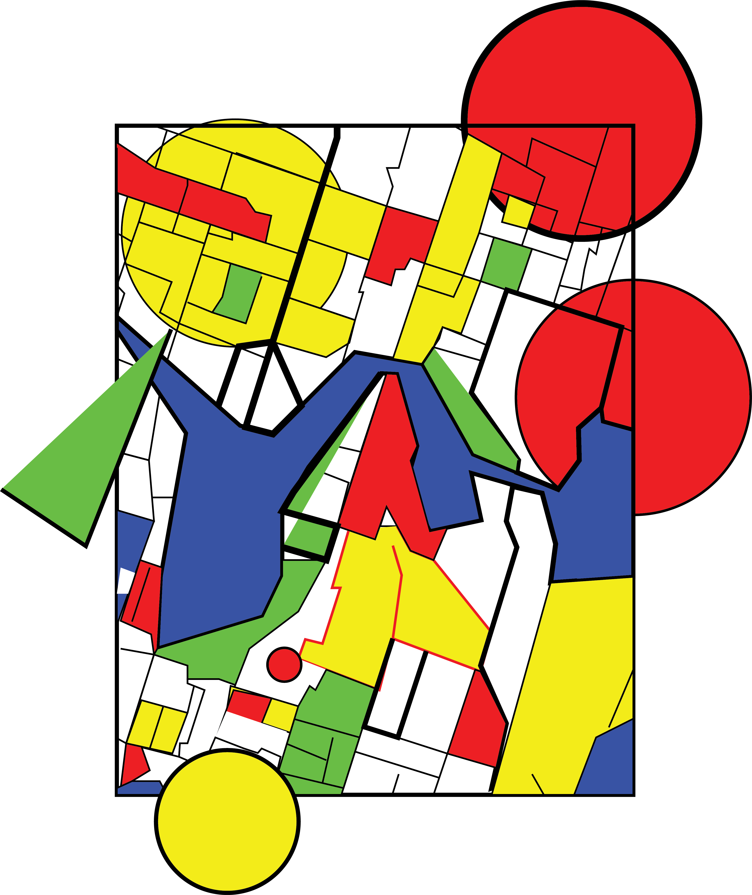
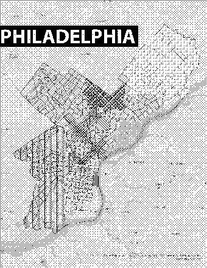
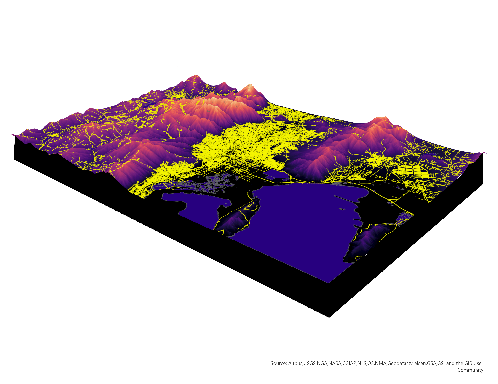

Forrest Park St.Louis
My initial memories of the United States are in St. Louis, a city that once flourished but has gradually declined. I lived with my host family in the suburb of St. Charles, and every morning at 7 o'clock, I would ride in Mr.Warren's car, our history teacher, to go to high school, allowing me to enjoy the beautiful landscape there outside of the window. Forrest Park left the deepest impression on me, where the beauty of the landscape, from streams to intricately arranged forests, to undulating hills, could be outlined by lines, creating a picturesque silhouette.

Seattle Lake Union
After graduating from high school, I came to Seattle for my undergraduate studies. It's a city that I both love and hate, with its continuous rainy seasons, intense academic environment, and a local atmosphere of melancholy that often leads to my complaints. However, I must admit that it is the most beautiful city I have ever lived in. "There, even the grass seems to glow." I am grateful for Lake Union and Gas Works Park, as they have provided me with endless inspiration for creativity. I often find myself contemplating life while gazing at the city and the lake. Seattle is both concrete and abstract, hollow and colorful. In this map, I choose to depict Seattle using polygons and various shapes to capture its essence.
Philadelphia
My initial impression of Philadelphia came from the TV show "It's Always Sunny in Philadelphia." Since then, in my mind, Philadelphia is a city filled with sunshine and love. Tired of the gloominess of Seattle, Penn in Philadelphia became my top choice for graduate studies. Thus, I embarked on a journey to the East Coast of the United States. Now, approaching my fourth month of living here, I am very happy to have gained many friends, knowledge, and a fulfilling life. However, Philadelphia is still unfamiliar to me, so I choose to depict it with blurry dots, symbolizing my yet unclear perception of the city.
Salt Lake City
I haven't been to Salt Lake City, but I heard it's a city surounded by mountains and lakes. Thus I pick it for 3D mapping. Hope I'll visit there some day.
